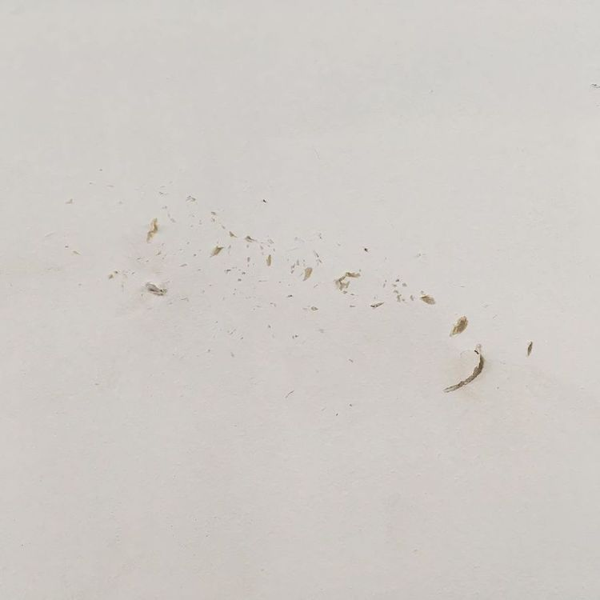
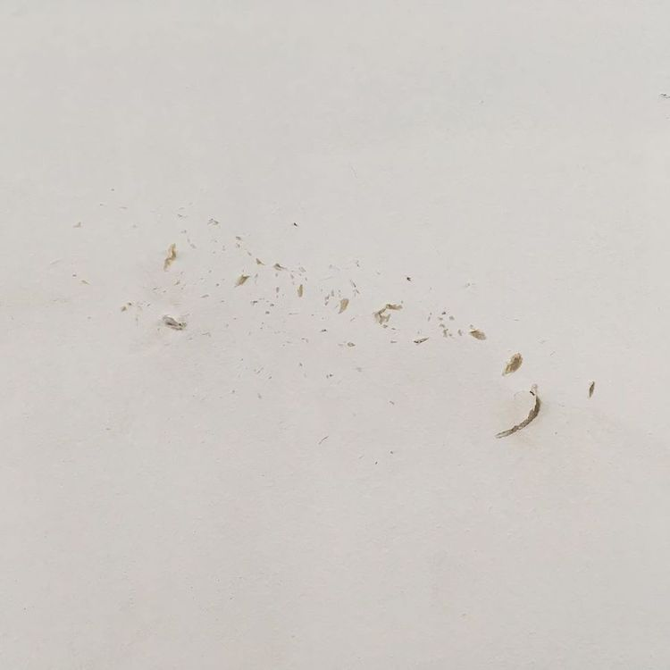
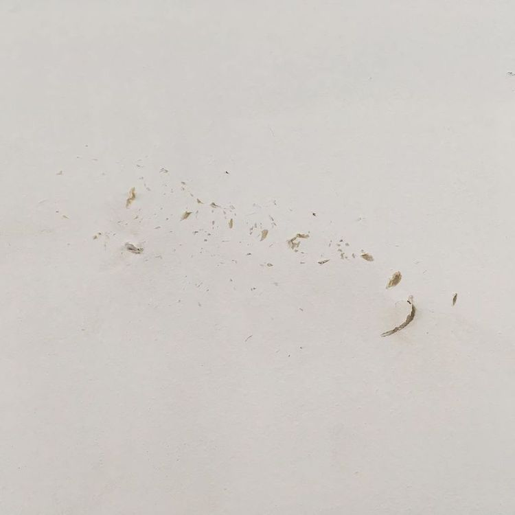

FS1
2019年6月17日-6月29日
6.17-6.29.2019
[Exhibition] by 天気 | 🐴
Weather (F) | Looking from the horse (S)
This is The Exhibition of Our Sustainable Development Goals
 

vg.pe.hu/2f/fs1.html
Weather (F) | Looking from the horse (S)
This is The Exhibition of Our Sustainable Development Goals

vg.pe.hu/2f/fs1.html
・ペフにあるものあったものを用いた作品のようなものの展示・販売
・会期中には、簡単なDIYワークショップなどの催しを開催
・7月に開催を予定する「造り物」という文化のプレゼンテーション
・３階の改装を完了させる。その中で生まれた副産物のようなものを、次の創作に繋げる方法を考える
・作品のようなものを用いて、これまでよりもさらに綺麗に展覧会を構成できるギャラリーをつくる
・会期中に改装を完了させる予定の3階にある2部屋の使用用途を考え、それを紹介する催しを実施する
・物をつくる過程を見せることで、ものづくりの楽しさや豊かさを共有する